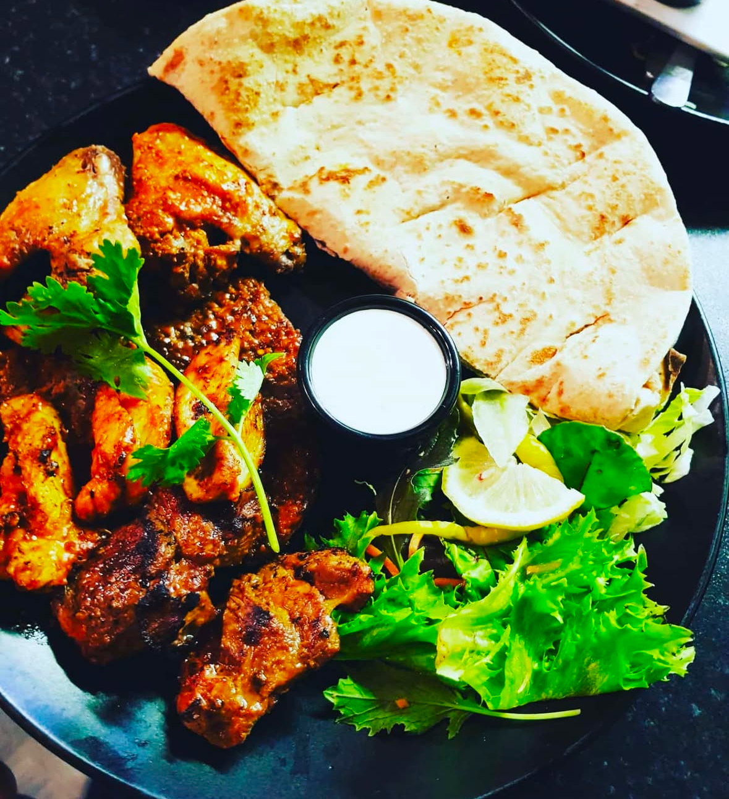
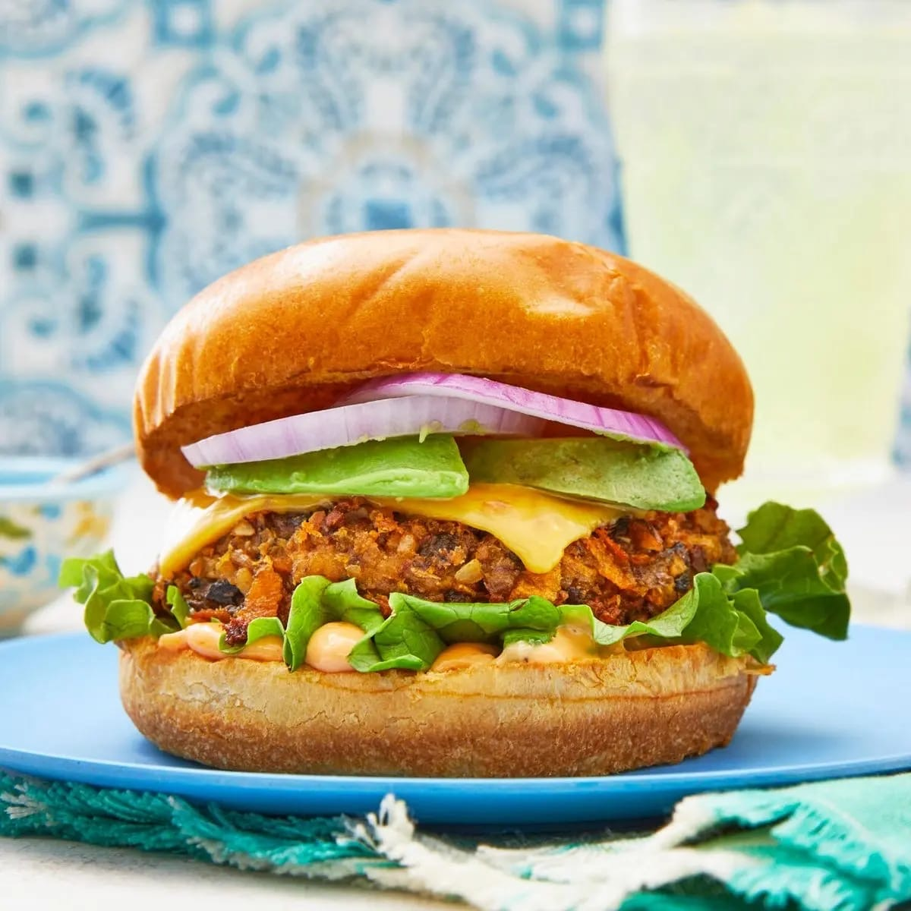

Our pizza is crafted using the authentic recipes of Valentino, whose passion for pizza-making inspires our restaurant. His traditional techniques and flavors from back home bring an unmatched taste to every slice. Made with fresh ingredients, hand-stretched dough, and rich, flavorful toppings, our pizzas deliver a truly authentic experience. One bite, and you'll taste the difference!
ORDER

Our delicious grills are a feast for the senses! Made with a special blend of aromatic spices and slow-cooked to perfection, every bite bursts with rich, smoky flavors. Whether it's tender kebabs, juicy meats, or sizzling skewers, our charcoal-grilled specialties bring out the best in every ingredient. Served with your choice of fresh bread, fragrant rice, or crispy golden chips, it’s a meal made for true grill lovers!
ORDER

Our Sizzling Fillet Burger is a flavor-packed delight! Made with a spicy, crispy, and sizzling chicken fillet, it’s topped with our house special sauce for the perfect kick. Fresh lettuce, juicy tomatoes, crunchy cucumbers, and a hint of zesty pickles complete this mouthwatering masterpiece—all served in a soft, toasted bun. A true must-try for burger lovers!
ORDER
About Us

Welcome to our family-based restaurant, located in the heart of Tubbercurry. We are dedicated to providing excellent customer service while crafting delicious, home-cooked meals that bring smiles to your face. Our passion for good food and a warm, welcoming atmosphere ensures that every visit feels like dining with family. Come join us and experience the heart of Tubbercurry, where great food and great service meet!